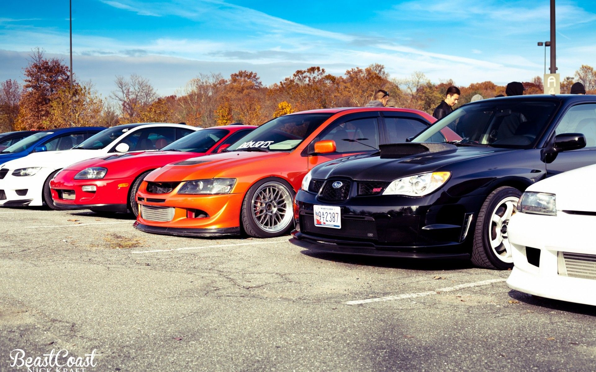
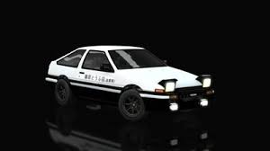
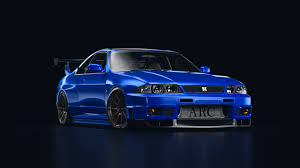
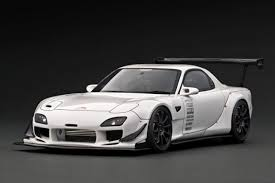

Sobre os JDM
No contexto da indústria automobilística, JDM é um termo que se refere a carros japoneses de alto desempenho e altamente personalizados.

-

AE86 Trueno
O pai do Drift
-

Skyline R33
Primeiro Carro a Receber o Motor RB26
-

RX7 FD
Um Dos Unicos Carros Com Motor Rotary
O desporto foi desenvolvido nas sinuosas estradas de montanha do Japão no final dos anos 70 e início dos anos 80 quando pilotos de circuito como Kuniaki Takahashi e Keiichi Tsuchiya - mais conhecido como Drift King - começaram a acelerar a sair de curvas cada vez mais cedo ao pôr o carro de lado.
 copy.jpg)
Jorge